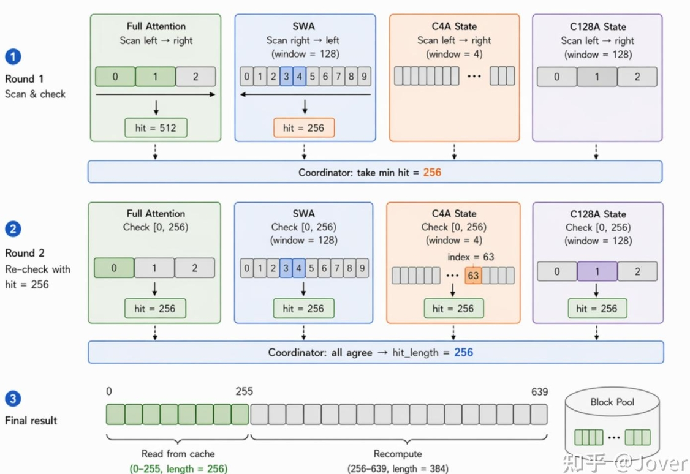

vLLM 与 SGLang 如何管理
混合注意力与 DeepSeek-V4 KV cache？
面向 Qwen/Kimi 的 Full+Linear layer-outermost混合注意力，以及 DeepSeek-V4 的 SWA+CSA+HCA/Indexer block-outermost 布局，解释缓存布局、页大小不一致、 碎片化、前缀复用，以及不同缓存对象能否共享显存。
1. 先给结论
- vLLM 的关键机制是 KV cache spec、分组、packed layout 和共享 block stride。 对 block-outermost 布局的混合模型（DeepSeek V4），packed layout，vLLM 先把同一 group 内的不同 page 按实际字节数紧密排放，再让不同 group overlay 同一个 backing allocation。 对 layer-outermost 布局的模型（Qwen, Kimi），进入 page-size unification 或 full-allocation fallback。不同类型的KV Cache保留、释放与前缀命中逻辑不同。
-
SGLang 的关键机制是由混合包装层管理不同的底层池。
常见
HybridLinearKVPool路径将 full attention 的 KV pool 与 Mamba/linear state pool 分开管理；较新的UnifiedHybridLinearKVPool路径可以把这些子池放进同一个UnifiedKVPool字节 buffer，由各自的子分配器管理不重叠的范围。 两边不要求把“一个 KV token page”和“一个 state slot”做成相同字节数；HybridLinearKVPool仍使用同一个 page_size 参数服务 full KV， 而MambaPool以 state slot/可选 envelope buffer 管理线性状态。需要关注分池后某个池耗尽、另一个池仍有空闲的容量失衡。
2. vLLM：把异构缓存放入混合缓存管理体系
2.1 模型层先声明不同的缓存规格，统一分配，生命周期不同
缓存管理器根据 KV cache spec 建立 KV cache groups。
相同缓存规格的层可以归组，attention 和状态层则采用对应的缓存管理策略。
相关源码通常围绕 FullAttentionSpec、
MambaSpec、KVCacheGroupSpec 等类型组织。
Full attention 的历史 KV 通常在请求期间持续保留。 Linear attention 可以推进当前状态，也可以根据缓存策略保留部分历史状态。 混合管理器必须同时决定哪些 block 仍有引用、哪些状态可释放、 哪些前缀边界可以复用。
2.2 Layer-outermost: 修改block_size，统一页字节数
vLLM 对混合 page 的首选路径是 block-outermost packed grouping。
_get_packed_kv_cache_groups 先按 uniform type 建立 bucket，再按
page_size_bytes 形成组内的重复模式；组内 page 按 offset 紧密排列。
这一步不把不同 group 同时拼成一个 page：每个 group 都有自己的 layer-page
区域，并从共享 backing allocation 的相同 block 起点建立 view。
如果该布局不可用，unify_kv_cache_spec_page_size 才取最大页：
较小 attention page 在整数倍时增大 block_size，MambaSpec 或不整除的
非 MLA attention 可以用 page_size_padded 补齐，MLA 不兼容时转
full-allocation fallback。
设：
T = 单个 full-attention 层、每 token 的 KV 字节数
S = 单个 linear 层的一份完整状态字节数
下面的关系只描述“统一页” fallback 的一种简化情形：
B × T ≥ S
因此：
B ≥ ceil(S / T)
（不是 packed block-outermost 路径的分配公式；实际还要看 layer group）
实际 B：
还必须满足 attention backend、kernel 和配置的合法粒度。
若公共页大小 P = B × T：
linear 页内 padding = P - S
这解释了一个容易反直觉的现象：
在统一页的 fallback 路径中，linear 状态较大可能迫使 full attention 使用较大的 token block。
它有助于统一分配粒度，却会使短请求的最后一个 KV block 留下更多空位，
也可能改变前缀缓存的命中粒度。packed 路径保留各 page 的实际大小，
只在某个 group 的 page 总和小于公共 block_stride 时产生尾部 slack。
2.3 Block-outermost: DeepSeek-V4：SWA + C4A/C128A/Indexer 的packed cache
下文把模型文档中的 CSA/HCA 具体化为源码中的 C4A/C128A 压缩 MLA 路径。 DeepSeek-V4 的 sparse indexer backend 声明 BLHNC / BLNHC 布局。B 在最外层，所以一个物理 manager block 的内容可以表示为多个 layer page 的连续区域：
block b: [layer A page][layer B page][layer C page][tail slack]
next block: 同样的排列，起点间隔为 block_stride这里的“打包”是同一 group 内多个 layer page 并排排放。不同 group 的 KVCacheTensor 可以从同一 backing allocation 的相同 block 起点建立 alias view；共享地址范围。因为一个 block_id 同一时刻只从共享 block pool 取给一个 group，这些 view 不会 同时承载两个 group 的有效值。
byte_offset += len(layer_names) * spec.page_size_bytes： 这行代码在构造每个 group 的 tensor view 时，为当前 group 内下一个 spec 区域累加字节偏移；它本身不表示 group 间打包。block-outermost 下， layer_stride = page_size_bytes、block_stride = bytes_per_block， 所以 block b 的地址是 offset + l * layer_stride + b * block_stride。所有 group 的 offset 可以为 0，从而覆盖同一 backing buffer。C4A、C128A 和 indexer cache 都是 MLAAttentionSpec 的 uniform 类型，且block_size 都是 256，因此 packed grouping 可以把它们放进同一 bucket，落在同一个最终 group ，一个 manager block 出现类似 [C4A page][indexer page][C128A page] 的并排区域（按 layers_by_spec 的首次出现顺序排列）。
层数量也参与缓存布局。packed 路径会按 page-size pattern 把层拆成若干 cache group；同一 group 内的层 page 连续排放，不同 group 从 backing storage 的相同 block 起点建立 alias view。每个 group 的有效字节数是其所有 layer page 的总和，因此；传统统一页路径还可能出现 padding layer（如SWA group 2会出现一层padding）。
公共 stride 则是这些总和的最大值：
group_bytes(g) = Σ page_size_bytes(layer in g)
bytes_per_block = max_g group_bytes(g)
num_blocks = floor(available_memory / bytes_per_block)因而小group仍可能有尾部slack：bytes_per_block - group_bytes(g)。DeepSeek-V4 + MTP 的测试还展示了典型的多 group 结构：一个主 full MLA group、一个目标 SWA group、一个 MTP/EAGLE SWA group、C4 state group 和 C128 state group；这是测试构造的示例，实际 group 数量取决于 checkpoint 的 层数、MTP/EAGLE、window 和 spec 注册结果。
配置阶段先得到 bytes_per_block，再计算 num_blocks = available_memory // bytes_per_block；worker 随后创建 一个大小约为 num_blocks × bytes_per_block 的 int8 backing buffer， 用 as_strided 为各层建立 view。运行时 block pool 只分配和回收整数 block_id；不同 group 的 manager 通过同一个 pool 取得这些 ID，释放后 地址范围即可服务另一 group。
3. vLLM：prefix cache 保留策略与显存利用率的 tradeoff
3.1 混合注意力的 prefix cache
启用 prefix caching 时，混合注意力模型的 SWA、FullAttention/MLA，以及 LinearAttention 的 Mamba state 检查点，
都通过同一个 BlockPool 和统一 free queue 管理可复用缓存。不同类型由各自的 manager 决定哪些块可登记、命中和释放，
可缓存且无请求引用的块则进入同一缓存 LRU 队列。当前状态、scratch 或未登记 hash 的块不作为 prefix cache 保留。
Prefix cache的匹配粒度scheduler_block_size，按照Max(block_size)决定。混合注意力的prefix cache匹配按照迭代不动点的方法来决定。

prefix lookup 本身不刷新队列。实际接纳命中块时，touch() 增加引用计数，并把原本空闲的命中块移出队列；
释放后引用计数降到 0 的有 hash 块再追加到队尾。SWA 仅接纳命中终点需要的窗口块，窗口外已有的历史 live cache 不会因这次命中刷新 LRU。
Linear State 的难点在于检查点设置。Full attention 可以按缓存块保存前缀 KV。 Linear attention 的当前状态则持续被更新； 仅保存第 1,024 个 token 后的状态，并不能直接得到第 768 个 token 后的状态。 因此，前缀复用需要保存可恢复的中间检查点，或从更早检查点重算。
已有请求的前缀：
token 0 ───── 256 ───── 512 ───── 768 ───── 1024
S256 S512 S768 S1024
新请求与旧请求共享前 800 tokens：
若保存了 S768：
可从兼容的 768 边界恢复，再计算后面的 token。
若只有 S1024：
不能把它直接当作 S800 使用；
需要更早的可用状态，或者重算。对整个混合模型，一次有效的前缀命中必须让相关层都能恢复到一致的 token 位置。 不能仅看到 full KV 命中 800 tokens，就认为 linear 层也能跳过相同计算。 实际还要满足块边界、可用状态检查点和框架执行策略。
更密集的检查点可以降低重算量，但增加状态占用和复制成本。 更稀疏的检查点节约容量，但可能降低有效前缀命中长度。
3.2 提高显存利用率仍有代价
Qwen/Kimi 的 Full KV 与 MambaStates 对齐可能增大 FullAttention 的 block_size。 在需要统一页字节数的混合布局路径中，较大的 linear state 会推动 FullAttention 使用更大的 token block，减少状态页与 KV 页尺寸不一致造成的浪费。 这会改变 attention kernel 的分页与访存粒度，可能影响性能；更粗的 prefix hit 对齐也可能降低可复用 token 数和命中率，增加重算。 性能变化的方向与幅度取决于 backend/kernel 和请求分布，不能仅凭 block_size 判断必然变慢；支持更细命中粒度的路径也需要单独分析。
DeepSeek V4 的 block-outermost packing 通过组内不同缓存对象与注意力层的紧密排放，避免把每个小 page 都补齐到最大 page，但仍无法消除全部碎片。
各对象自身的 page alignment padding 仍存在；不同 group 共用最大 block_stride，较小 group 仍有尾部 slack；
最后一个未填满的 block，以及同一物理块内无法单独回收的无复用价值内容，也会占用容量。
| 最终 group | page 总字节数 | 页容量 / 公共 stride | 有效内容 / 公共 stride | group 尾部 slack |
|---|---|---|---|---|
| 主 MLA：30 C4 KV + 30 indexer KV + 31 C128 KV | 1,435,968 B | 100% | 1,410,928 / 1,435,968 = 98.26% | 0 B |
| SWA 组 0：31 层 | 1,160,640 B | 80.83% | 1,158,656 / 1,435,968 = 80.69% | 275,328 B |
| SWA 组 1：30 层 | 1,123,200 B | 78.22% | 1,121,280 / 1,435,968 = 78.09% | 312,768 B |
| C4 state：30 主 compressor + 30 indexer compressor | 1,244,160 B | 86.64% | 1,228,800 / 1,435,968 = 85.57% | 191,808 B |
| C128 state：31 层 | 1,017,792 B | 70.88% | 1,015,808 / 1,435,968 = 70.74% | 418,176 B |
DeepSeek V4 Pro中统一页利用率最低的是 C128 compressor group，有效内容利用率约 70.74%。它的每个物理 block 占用公共 stride 的 1,435,968 B，其中 1,015,808 B 是 state 内容、1,984 B 是 page alignment padding、418,176 B 是 group 尾部 slack。其他 group 不能同时占用该 block_id 的尾部空位。
推导过程 · DeepSeek V4 Pro 缓存打包
_get_packed_kv_cache_groups() 先按 uniform type 和相同 block_size 建 bucket：
C4A 主 MLA、C4A indexer 和 C128A 主 MLA 的 block_size 都为 256，可以进入同一个混合 page bucket；
SWA KV、C4 compressor、C128 compressor 的 block_size 分别为 64、4、8，进入不同 bucket。
它们虽然不能与主 MLA 混合打包，但各自 bucket 内的多个层仍会打包进同一 group。
源码按每种 page_size 的层数判断 bucket 是否 balanced（各 page_size 层数相等）。balanced 的混合 page bucket 为
repeats_per_group 设置下限，再由 _approximate_gcd() 选择共同重复数；
单一 page_size bucket 可按这个重复数拆组，使用 pattern_repeats[i::num_groups] 分配层。
层数不相等的混合 page bucket 则整个保留。因此必须知道 checkpoint 的各类层数，才能得到最终 group 和利用率。
这里按 DeepSeek-V4-Pro 的实际 config.json 计算：61 个目标层包含 30 层 C4A、31 层 C128A，head_dim=512、index_head_dim=128、sliding_window=128，另有一个 MTP 层。下面使用 fp8_ds_mla、FP8 indexer、attention manager block_size=256、单个 PP stage 包含全部目标层的运行条件，先不启用 MTP。权重量化配置不等同于 KV dtype。
| 对象 | 未对齐页字节数 | 按 576 B 对齐后的 page_size_bytes |
|---|---|---|
| C4A 主 MLA / SWA KV | 64 × 584 = 37,376 | 37,440 B |
| C128A 主 MLA | 2 × 584 = 1,168 | 1,728 B |
| FP8 indexer KV | 64 × (128 + 4) = 8,448 | 8,640 B |
| C4 主 compressor | 4 × (2 × 2 × 512) × 4 = 32,768 | 32,832 B |
| C128 主 compressor | 8 × (2 × 1 × 512) × 4 = 32,768 | 32,832 B |
| C4 indexer compressor | 4 × (2 × 2 × 128) × 4 = 8,192 | 8,640 B |
第一步按 uniform type、block_size 和 SWA window 建 bucket：主 MLA bucket 为 30 个 C4A KV、30 个 indexer KV、31 个 C128A KV（block_size=256）；SWA bucket 有 61 个 page（block_size=64）；C4 state bucket 含 30 个 32,832 B 主 state page 和 30 个 8,640 B indexer state page（block_size=4）；C128 state bucket 有 31 个 32,832 B page（block_size=8）。
第二步判断 balanced：主 MLA 的三种 page 数量 30/30/31 不相等，整组保留；C4 state 的两种 page 数量 30/30 相等，是 balanced 混合 page bucket，因此 min_repeats_per_group=30。SWA、C4 state、C128 state 的最大同尺寸 page 数量为 61、30、31，源码调用 _approximate_gcd([61,30,31], lower_bound=30)，选择 repeats_per_group=31（向上补齐计数总和为 1+1+0=2）。
第三步计算 group 数：主 MLA 不 balanced，得到 1 组；SWA 得到 ceil(61/31)=2 组，通过 pattern_repeats[i::2] 分成 31 层和 30 层；C4 state 得到 ceil(30/31)=1 组，包含 30 对主/indexer state；C128 state 得到 ceil(31/31)=1 组。这些 state 是 SlidingWindowMLASpec，不触发 MambaSpec 的额外拆组分支。最终共 5 个 group。
G_MLA = 30 × (37,440 + 8,640) + 31 × 1,728 = 1,435,968 B
G_SWA_0 = 31 × 37,440 = 1,160,640 B
G_SWA_1 = 30 × 37,440 = 1,123,200 B
G_C4_state = 30 × (32,832 + 8,640) = 1,244,160 B
G_C128_state = 31 × 32,832 = 1,017,792 B
公共 block_stride P = max(上述五组) = 1,435,968 B（由主 MLA 决定）
页容量占比 = group page 总字节数 / P
有效内容利用率 = group 未对齐的完整页内容字节数 / P若启用配置中的一个 MTP 层，且其 SWA spec 与目标相同，则 SWA bucket 增至 62 层，_approximate_gcd([62,30,31], lower_bound=30) 仍选 31；两个 SWA group 都为 31 层，其有效内容利用率都为 80.69%。主 MLA、两个 compressor group 和公共 stride 保持上述值。spec 不同的 MTP 必须按实际 bucket 重新计算。
这些比例是完整填充的单个物理 block 的利用率，包含 group 内所有缓存对象；整个显存池还需按各组占用的 block 数加权。PP 切分、KV dtype、indexer FP4/FP8 选择和部分填充都会改变结果。
源码核验：single_type_kv_cache_manager.py 的 reachable_block_mask()、
cache_blocks() 与 add_local_computed_blocks()；block_pool.py 的
cache_full_blocks()、touch() 与 free_blocks()；
kv_cache_utils.py 的页大小统一与 packed group 分配逻辑。以上结论以工作区当前源码及对应配置为准。
4. SGLang：Full KV 与 Linear State 的分池和统一 backing
4.1 混合包装层负责路由到对应池
在常见混合线性注意力实现中，
HybridLinearKVPool 对上提供统一入口，
内部将 full-attention 层的数据交给 full KV pool，
将 linear 层的卷积与 recurrent state 交给 Mamba/linear state pool。
混合模型
│
├─ Full-attention 层
│ └─ KV pool：按 token / token page 分配
│
└─ Linear-attention 层
└─ State pool：按请求状态 / 检查点槽分配
上层协调请求与前缀；
下层使用各自的数据布局和容量单位。这样不必仅仅为了容纳一个较大的 linear state， 就让一个 full-attention token page 同样变大。 Full KV 的 page 粒度和 linear state 的 slot 大小可以分别确定。
4.2 不强制统一 page_size，容量可以分开或在 unified buffer 中回收
显存预算需要在 full KV 和 linear state 之间分配。 具体如何计算，取决于版本、最大并发、状态大小、 prefix caching 策略和相关配置；不能假设两边都是同一个 token 容量。
| 工作负载 | 容易先紧张的资源 | 另一侧可能出现的情况 |
|---|---|---|
| 少量请求、很长上下文 | Full KV token 容量。 | Linear state slots 仍有较多空闲。 |
| 大量并发、每个请求较短 | 每请求 linear 状态容量，亦可能受调度上限约束。 | Full KV pool 仍有空闲 token pages。 |
| 大量可缓存前缀与状态检查点 | 缓存状态容量与淘汰压力。 | 空闲量取决于前缀长度、命中与检查点保留策略。 |
如果底层是在初始化时分别预分配的大张量，
一个池内归还 slot 只是增加该池的空闲计数，
不会自动让另一个池的 tensor 变大。
SGLang 的 UnifiedKVPool 是明确的共享 backing storage 例外：
它在一个 uint8 buffer 中按子池的 envelope/page 方向增长，
通过虚拟 slot 到物理范围的映射和压缩让空闲范围可以被邻近子池回收。
这仍然是地址空间复用，不是 full KV 与 linear state 内容互换。
没有该 unified 路径时，池间借用必须依靠动态重分配或重建池机制。
5. “Full 和 Linear Cache 能否复用？”需要拆成五个问题
| 复用的含义 | 答案 | 原因或条件 |
|---|---|---|
| 用 full KV 的内容代替 linear state | 不能直接复用。 | 两者来自不同层、不同投影与不同计算。 Linear state 是特定递推过程的结果，full KV 不是它的等价编码。 |
| 同一请求让两类活跃缓存占用同一段显存 | 通常不能。 | 下一步解码同时需要各层的历史信息。 层执行时间不同，不代表其缓存的生命周期不重叠。 |
| 释放后，把同一地址分配给另一种缓存 | 原理上可以，实现有条件。 | 需要分配器支持，满足大小、对齐、映射和同步约束， 并确保没有活跃引用或仍在访问的 kernel。 |
| 相同前缀的多个请求共享缓存 | 可以分别复用两类前缀数据，取决于实现。 | Full 复用 KV；linear 复用对应位置的状态检查点。 继续写入时需要私有状态、复制或等价的写时保护。 |
| 把 full 池的空闲容量实时借给 linear 池 | 不能默认存在。 | 统一混合分配器也受物理布局约束； 独立预分配池通常需要额外动态内存机制才能跨池扩容。 |
6. 应当区分的四类浪费
| 类型 | 表现 | 应检查的方向 |
|---|---|---|
| 页内碎片 | 请求最后一个 KV block 没用满；state 为公共页大小补齐。 | 实际 block size、页字节数、请求长度分布、状态 dtype。 |
| 分组填充 | 为了组织统一的 cache groups，某些组保留未用层槽。 | 每组层数、拆组规则、最终 backing tensor 布局。 |
| 池间容量失衡 | Full KV 耗尽但 state slots 有空闲，或反过来。 | 容量预算、最大并发、长短请求比例、是否支持动态重分配。 |
| 经典外部碎片 | 空闲内存被切成不满足分配要求的小段。 | 大张量预分配、固定大小块池、CUDA allocator 行为。 |
预分配固定大小块池通常能降低服务运行中的经典外部碎片， 但并不会消除前三类问题。 同样，GPU 已分配内存很高并不等于有效缓存利用率很高： 空闲 slot、padding 和可淘汰前缀都可能仍处于已分配大张量中。
7. 源码核验入口
以下链接对应本次工作区中实际核对的实现入口；GitHub main 会变化， 但本地快照中的相同符号可直接定位。
vLLM
- Hybrid KV Cache Manager 设计文档： 核验公共页大小、层分组、混合缓存约束和支持边界。
- vllm/v1/kv_cache_interface.py： 搜索 FullAttentionSpec、MambaSpec、page_size_bytes。
- vllm/v1/core/kv_cache_utils.py： 核验分组、页大小协调、padding 和块数计算。
- vllm/v1/core/： 搜索 block_pool、kv_cache_manager、single_type_kv_cache_manager， 核验释放、引用计数和不同类型的前缀命中策略。
- GPU model runner： 核验最终 KV tensors 如何分配，以及 cache groups 如何映射到物理存储。
- DeepSeek-V4 attention.py、 compressor.py、 MLA indexer backend： 核验 C4A/C128A/Indexer/SWA 的 spec、compress ratio、manager block_size 和 BLHNC/BLNHC 支持；本地快照中的 compressor state block_size 是 C4=4、C128=8。
- packed layout tests 与 DeepSeek-V4 geometry test： 核验 group overlay、最大 group stride、层内 page offset 和 alignment padding。
- mamba_utils.py 与 qwen3_5.py： 核验 Gated DeltaNet 状态 shape、dtype 与层类型。
SGLang
- memory_pool.py： 搜索 HybridLinearKVPool、MambaPool、MHATokenToKVPool， 查看 full KV 和 linear 状态是否独立预分配、容量单位如何定义。
- mem_cache/： 核验混合前缀缓存、状态检查点、引用计数与淘汰机制。
- model_executor/： 搜索 hybrid、mamba、memory pool，核验池预算计算与初始化顺序。
- models/ 与 configs/： 结合模型注册和实际配置确认 Qwen 各版本是否接入同一混合缓存路径。